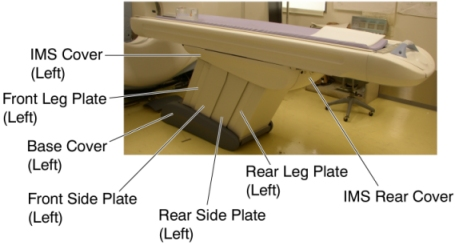

Operating Documentation
Direction 5193574-800, Rev# 22
LightSpeed 7.X Service Methods
Module Version 2.0, Version Date 5/12/10
Operating Documentation |
| Required Persons | Preliminary Reqs | Procedure | Finalization |
|---|---|---|---|
| 1 |
| Last Revised: | 12 May 2010 |
| Item | Qty | Effectivity | Part# | Manufacturer | |
|---|---|---|---|---|---|
| Table Support Tool | 1 | - | 5138908 | - | |
| Oil Pan (2 liters) | 1 | - | - | - | |
| Item | Qty | Effectivity | Part# | Manufacturer |
|---|---|---|---|---|
| Oil | 1 | - | Z9807QD | - |
| Item | Qty | Effectivity | Part# | Manufacturer | |
|---|---|---|---|---|---|
| Hydraulic High Pressure Hose | 1 | - | 5127286 | - | |
| ||||
| CRASH HAZARD ! | ||||
| THE TABLE MUST BE SUPPORTED USING THE SUPPORT TOOL AS DESCRIBED BELOW WHEN CHANGING THE HIGH PRESSURE HOSE. | ||||
Raise the Table to maximum height.
Move the Cradle and IMS to OUT limit position.
Remove power from Table by turning off 120VAC, Axial Drive and HVDC switches on Service Switch Panel.
Remove the following Table components and covers:
IMS Rear Cover
IMS Side Cover (Right/Left)
Front/Rear Side Plate (Right/Left)
Front/Rear Leg Plate (Right/Left)
Illustration 1: Table Covers

Attach the Table Support Tool as follows:
Perform this step if applicable:
(For GT1700 and GT2000 Table) Skip this step.
(For Global PET/CT Table) Release Transporter and manually push up against the rear Hard Stop.
Illustration 2: Table Pushed Against Hard Stop (Global PET/CT Table)

| ||||
| crash hazard! | ||||
| The Table is very heavy and can move if The Global PET/CT Table transporter is not secured! | ||||
| The transporter must be secured from moving before attaching the table support tool. |
Perform this step if applicable:
(For GT1700 and GT2000 Table) Skip this step.
(For Global PET/CT Table) Attach one of the “L” shaped alignment blocks to the front linear rail (The alignment blocks and hardware came with the Table and should have been stored away during install). Tighten bolt as shown in order to secure the Transporter.
Illustration 3: Tighten Alignment Block (Global PET/CT Table)

The adjuster of the support tool A should be partially extended, about 3 cm, before supporting the Table.
Illustration 4: Table Support Tool

Attach the support tool A to the left top frame, and turn the set screw to CCW to fix the support tool A.
Illustration 5: Support Tool 'A' Attachment

Attach the other support tool A to the right top frame, and turn the set (hexagon) screw to CCW to fix the support tool A.
Attach the support tool B to the support tool A using 4 screws.
Power up the Table from the Service Switch Panel.
Extend the adjusters by turning them so that the adjusters touch the floor, and lower the Table onto the support. Make sure that there is no oil on the floor and the support tool is installed perpendicular to the floor.
Illustration 6: Table Support Tool Attachment (GT1700 and GT2000 Table)

Illustration 7: Table Support Tool Attachment (Global PET/CT Table)

| ||||
Confirm the following before removing power from Table:
| ||||
Remove power from Table by turning off 120VAC, Axial Drive and HVDC switches on Service Switch Panel.
Cut any tie-wraps holding the oil hoses.
Put the oil pan on the Table base.
Disconnect the high-pressure hose from the hydraulic pump. A oil may spill out from the high-pressure hose. Drain oil in the high-pressure hose.
Disconnect the high-pressure hose from the hydraulic cylinder.
Illustration 8: Hydraulic Hoses

Connect the high-pressure hose, one end to the cylinder, and the other end to the pump, then tie-wrap the hose in place.
Illustration 9: Hydraulic Hoses Configuration

Power up the Table from the Service Switch Panel.
Raise the Table to its highest position, and verify that the new high-pressure hose is securely connected, and a oil is not leaked out from the joint.
Turn off all 3 switches (Axial Drive, HVDC, 120VAC).
Remove the Table Support Tool from the Table.
Table pump lubrication:
Mark the position of pump upper cover on both side for re-installation.
Disconnect the cable connectors of the tape switches and touch sensors.
Remove six (6) screws holding the both sides of the pump upper cover, and remove the pump upper cover.
Illustration 10: Pump Upper Cover Removal

Pry a lid up using a flat-head screw driver.
Illustration 11: Lid of Pump

Pour approximately 100cc of the oil into the pump.
Power up the Table from the Gantry Service Switch.
Raise the Table as high as possible.
Turn off the Table from the Gantry Service Switch.
Check the level of the oil by using a stick such as tie-wrap, specification is shown in illustration below.
Illustration 12: Check Oil Level

Secure any loose hoses with tie-wraps.
Raise and lower the Table repeatedly to verify that the hoses do not catch or pull excessively.
Turn off all 3 switches (Axial Drive, HVDC, 120VAC), and re-install the Table covers.